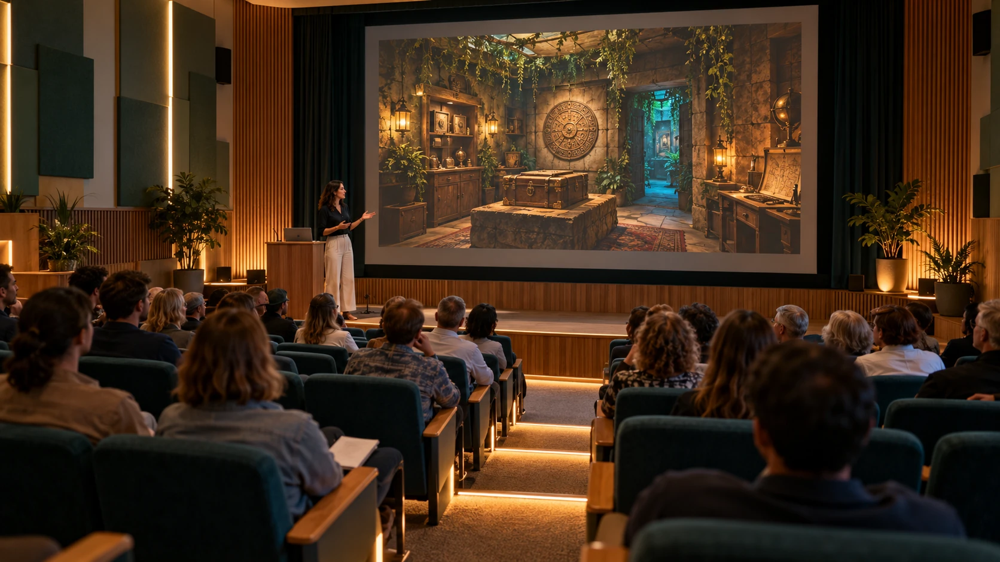

ROUND ONE · Presentation
Escape Room Team Building
ROUND ONE Australian escape room network business plan

Use the arrow keys in presentation mode. Escape returns to the outline.
01 / 11
Executive summary
Distinctive escape rooms across Australia, connected by journeys worth taking, skills worth carrying forward and fresh reasons to return.
An Australia-wide escape-room network is the business concept under investigation: design distinctive rooms, connect local experiences into tourism journeys, and renew the catalogue so people have a reason to return. Enjoyment brings people through the door; reflection, just-in-time learning and practice in new settings could extend the value beyond the visit.
The intended connections with Aura of Intelligence and p4a-xyz-cinema bring personal learning, creative scenarios and civic participation into the research. Local stories and paid creative, technical and trade work are part of the opportunity. Joyful Responsible Abundance provides the wider direction: worthwhile experiences, responsibility to others and wider access to useful learning, work and opportunity.
Read this chapter →02 / 11
Market and venue evidence
Compare existing venues and customer segments, then examine which local opportunities could support this business concept.
| Customer | Reason to buy | Buying pattern and commercial response |
|---|---|---|
| Public groups, families and visitors | Enjoyment, novelty, an occasion together and a memorable local experience | Weekends, evenings and holidays; clear group limits, reliable booking and fresh rooms for return visits. |
| Schools and youth organisations | Curriculum-linked excursions, communication and collaboration, an accessible shared challenge | Term-time blocks; transport, supervision, class size and reflection capacity determine the timetable. |
| Employers and business-event organisers | Team development, a useful retreat activity and application to real work | Weekday and conference bookings; a defined workshop, facilitator and agreed group outputs. |
| Tourism partners and local operators | More reasons to visit, stay, return and spend locally | Bookable routes, referral terms, live availability, reliable settlement and regionally distinctive content. |
Tourism Research Australia reports 112.5 million domestic overnight trips and $108.1 billion in spending, plus 288.4 million day trips and $52.0 billion in spending, for the year ending June 2026. These are travel occasions and spending across tourism. These figures give tourism context, rather than a share of spending available to this business. A local escape-room opportunity would need its own demand evidence.
ABS records 4,160,918 school students in 9,673 Australian schools in 2025. TRA reports $17.2 billion in business-event visitor spending during 2025. The school register and business-event calendar are starting points for identifying buyers, timing and transport requirements.
Read this chapter →03 / 11
A tourism network that rewards return visits
Explore how distinctive local rooms, linked travel and renewed experiences could support repeat visits across Australia.
A connected visitor journey is one way to develop the national network aim. A room could remain a complete local experience while also giving visitors a reason to try another destination. Distinctive stories, task structures and local connections would be important to the value of the journey.
Formats to compare include a local day with linked activities, a regional weekend with rooms and accommodation, and a passport used across a longer journey. Employer retreats and school series could add different forms of reflection and application. These are product concepts to research with their intended buyers.
Direct referrals, separately booked linked services and a package sold by a contracting operator create different support, pricing and settlement requirements. Comparing them does not establish partner participation or choose a selling structure.
Read this chapter →04 / 11
Room design and deployment
Compare room formats, space requirements and delivery methods before choosing a premises or installation approach.
The following formats are comparisons, not a rollout sequence. Their areas and room quantities are model assumptions dated 29 October 2026.
| Format to examine | Illustrative physical scope | Research question |
|---|---|---|
| Hosted room format | Two game modules at an assumed 40 to 50 m² each, plus measured shared facilities | Could a suitable host reduce duplicated support space while preserving quality and access? |
| Dedicated venue | Four assumed 45 m² game modules and a 400 m² whole-venue space illustration | Could the additional catalogue and capacity justify the premises and staffing cost? |
| Partner addition or replacement | A measured module integrated into an existing venue | Could design, installation and renewal services work without operating a dedicated venue? |
The comparison would identify the property owner, room owner, operator and contracting seller for each option. Capacity depends on rooms, group sizes, cycle times, staffed hours and demand. No property or allocation of those responsibilities has been selected.
Read this chapter →05 / 11
Itemised setup and operating economics
Review itemised supplier comparisons and explicit quantities, with the cost of unresolved scope left visible.
The cost research separates advertised unit prices, assumed quantities and hours, and scope that needs a quotation. A displayed supplier price becomes a worked extension only when multiplied by a clearly stated quantity. It does not become a delivered project quote.
Price observation date: 29 October 2026, as recorded in the source register. Rechecked pages and inherited listings awaiting verification are identified separately. Supplier quotation date: none recorded. Freight, GST, condition, warranty, availability and installation scope remain part of each comparison.
The numerical baskets below are worked illustrations using the inherited quantities. Their subtotals help compare scope and expose omissions. They do not select equipment, furnishings, trades, software or a capital budget.
Read this chapter →06 / 11
Finance, settlements and local ownership
Use worked calculations to inspect capacity, receipts, paid work and settlement, then identify what remains unpriced.
| Account | Income | Costs and obligations |
|---|---|---|
| Local venue | Its own admissions, workshops and agreed local services | People, premises, delivery, maintenance, renewal, finance and applicable tax. |
| Deployment business | Agreed design, installation, commissioning, training and upgrade contracts | Materials, paid labour, contractors, freight, project work and warranty obligations. |
| Network service | Agreed booking, support, scenario, distribution and renewal-service fees | Its own people, systems, processing, customer service and contracted delivery. |
For any structure eventually chosen, a consolidated report would eliminate transfers between related entities. An independent partner's revenue stays with that partner. A room sale and the operator's later ticket sales are different transactions at different times.
Customer money committed to future services is tracked through the pass-settlement ledger. Grants, loans, equity, member capital and customer receipts each retain their actual financial character. An expression of interest and a guarantee are not cash receipts.
Read this chapter →07 / 11
Language, teamwork and whole-life learning
Explore how enjoyable independent play, reflection and later practice could support communication and transferable skills.
The learning concept begins with people experiencing a challenge together. Selected recordings or task events could support reflection afterwards; the capture method and level of facilitation remain options. Reflection would help participants understand how their words, decisions and responses affected the experience, recognise something worth keeping, and practise something they want to change.
The intended whole-life scope extends from primary school through adolescence, working life, family relationships and later life. Returning customers encounter new stories and tasks. The repeated capability might be listening, explaining, handling uncertainty, negotiating a boundary, sharing work or repairing an exchange.
The game runs without hints. Learning support happens in the reflection and any separately booked workshop. A later room creates another opportunity to use the skill independently.
Read this chapter →08 / 11
Research computation and paid work
Extend the founder's research and computational ability while keeping business decisions with the founder and skilled work with people.
The business plan is for Luke Nathan Hayes to examine and develop. AI can help retrieve sources, compare alternatives, itemise costs, calculate scenarios and prepare questions. Those outputs need evidence and review. A model's recommendation is not a business decision.
No agent suite, reporting hierarchy or operating structure is a conclusion of ROUND ONE. The useful question at this stage is which research and computation tasks improve the evidence, how their outputs can be checked, and what they cost. The founder retains the direction, interpretation and choice of any next work.
Read this chapter →09 / 11
Renewal, rotation and useful asset life
Compare renewal and rotation methods that could keep rooms useful, support repeat visits and make future costs visible.
| Asset layer | Review and service pattern | Renewal decision |
|---|---|---|
| Story, evidence and facilitator material | Review after sessions and at a quarterly content meeting | Revise unclear elements, add variants and retire familiar or weak scenarios. |
| Props, furniture and moving mechanisms | Reset checks, scheduled condition checks and recorded repairs | Repair, refurbish or replace individual components against actual condition. |
| Audio, controls, compute and network | Functional checks, supported-version reviews and fault monitoring | Replace unsupported or unreliable equipment and test integration before reopening. |
| Building and fixed services | Inspections and maintenance required by the actual premises and installations | Fund the specific landlord or operator responsibilities in the lease and asset plan. |
The worked financial schedule ties replacement arithmetic to assumed asset quantities, benchmark prices and illustrative reserve horizons. Those horizons are modelling inputs to compare against actual condition and support. They do not claim that every item fails on a particular birthday.
Read this chapter →10 / 11
Local enterprise, councils and a fair go
Examine participation options for local businesses, councils and communities without presuming a commercial structure or partner commitment.
An existing escape operator can join distribution or install a new room. A tourism business can host a room or supply a linked experience. A local co-operative can own assets and employ people. A maker or trade business can deliver installation and renewal work. Agreements define the chosen relationship and its price.
A deployment service could maintain shared design records and learning material. Potential local contributions include place knowledge, people, premises, stories and customer relationships. The structure can support private businesses, co-operatives, community organisations and institutional hosts without requiring them to become one organisation.
Mutual Futures adds a route for succession and paid knowledge transfer from experienced owners. 500 Queens offers a connection for women-led enterprise, leadership and investment development. Participation and finance are developed through actual agreements.
Read this chapter →11 / 11
Research questions and possible development sequence
Use the evidence to decide what is worth developing next, with timing derived from the work rather than an assumed opening date.
A possible sequence is set out below for comparing dependencies. There are no assigned weeks, opening date or committed pilot duration.
| Research or development question | Evidence that would make a later decision concrete |
|---|---|
| Which customers and offers warrant further work? | Local demand evidence, competitor conditions and responses to alternative offers. |
| Which room and venue formats fit the opportunity? | Measured support-space needs, room concepts, access requirements and capacity comparisons. |
| What would delivery actually cost? | Comparable scope, new/used options, dated quotations, paid-work estimates and payment terms. |
| Which learning and technical methods are useful? | Playtests, capture comparisons, human review time and evidence of use in a different setting. |
| Would a small operating test be worthwhile? | A defined question, feasible staffing, costed alternatives and criteria for interpreting the result. |
| What would justify another location or route? | Evidence of customer value, repeat use, viable local economics and workable partner arrangements. |
For one supplier comparison, the published production lead times are 60 working days for standard rooms and 90 for custom rooms, with shipping additional. Those are source-specific observations dated 29 October 2026, not this business's timetable. Actual timing would depend on the route chosen and its delivery evidence. [M14]
Read this chapter →